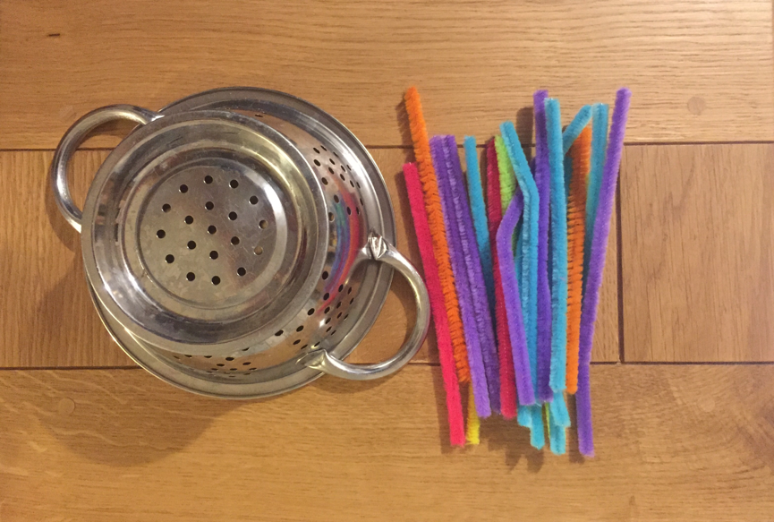

Hi, and welcome to CanDo Occupational Therapy’s blog! Carolyn and I are aiming to make this website somewhere that people can come for free advice and ideas on how to help their loved one, as well as a place where you can find out about what services CanDo can offer.
So to start the blog off, I thought I’d post a little activity that parents can do with their children that will help to develop their fine motor function in readiness for writing and other important school skills.
All you need is a colander and some pipe cleaners. I cut them in half so that they don’t bend when they are placed, and they are a little easier to pick up.

This activity is a great precursor to threading, which can be a difficult skill for little ones to master, especially if their motor skills are already delayed. Picking up the pipe cleaners helps to develop a pincer grasp, and strengthens the tiny muscles in the hand that are used for writing later on. It’s also good for concentration, learning colours, and hand eye coordination. You can even build counting in to it for older children. You can make the activity more difficult by making the pipe cleaners even shorter, and posting them through the holes of the colander.
A short and sweet activity for the first post, but expect more from CanDo very soon!
Have fun.
Clare